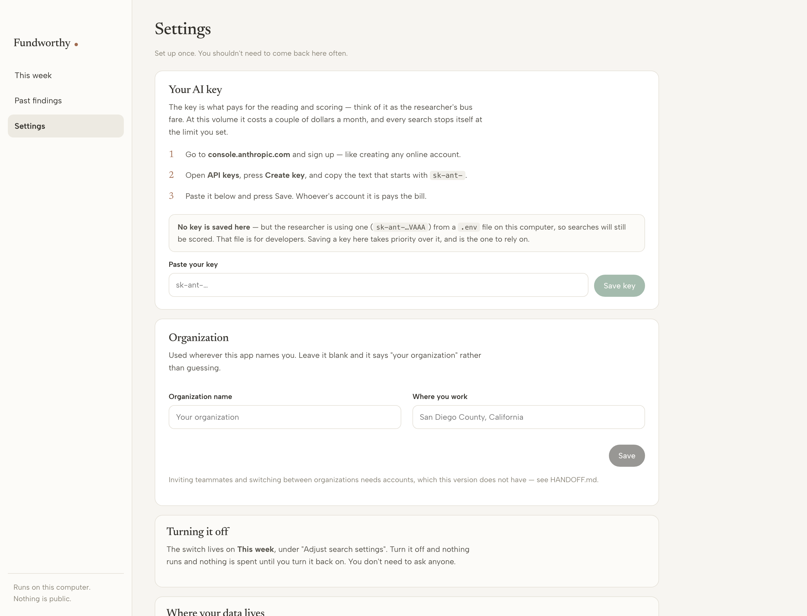
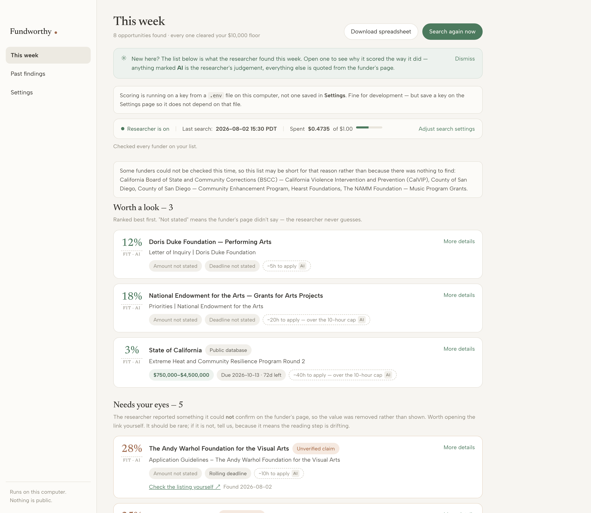

<style>
  @page { size: A4; margin: 16mm 15mm 18mm; }
  :root{
    --ink:#241f1a; --soft:#5d554c; --faint:#8a8177; --line:#e2dbd0;
    --paper:#fbf9f5; --sage:#4a6b52; --clay:#a8552f; --wash:#f2efe8;
  }
  *{box-sizing:border-box}
  body{
    margin:0; color:var(--ink); background:#fff;
    font:11pt/1.55 "Iowan Old Style","Palatino Linotype",Palatino,Georgia,serif;
  }
  h1,h2,h3{ font-weight:600; letter-spacing:-.01em; margin:0 0 .35em; }
  h1{ font-size:30pt; line-height:1.1; }
  h2{ font-size:17pt; margin-top:0; color:var(--ink); }
  h3{ font-size:12.5pt; margin-top:1.2em; }
  p{ margin:0 0 .7em; }
  a{ color:var(--sage); }
  code{ font:10pt ui-monospace,"SF Mono",Menlo,monospace; background:var(--wash);
        padding:.1em .35em; border-radius:3px; }
  .sheet{ page-break-after:always; }
  .sheet:last-child{ page-break-after:auto; }

  /* cover */
  .cover{ height:243mm; display:flex; flex-direction:column; justify-content:center; }
  .mark{ font-size:13pt; letter-spacing:.02em; color:var(--soft); margin-bottom:3mm; }
  .mark b{ color:var(--ink); font-weight:600; }
  .dot{ color:var(--clay); }
  .cover h1{ max-width:15cm; }
  .cover .lede{ font-size:13pt; color:var(--soft); max-width:13cm; margin-top:4mm; }
  .cover .meta{ margin-top:auto; padding-top:8mm; border-top:1px solid var(--line);
                font-size:9.5pt; color:var(--faint); }

  .kicker{ font:600 8.5pt/1 ui-sans-serif,system-ui,sans-serif; letter-spacing:.12em;
           text-transform:uppercase; color:var(--clay); margin-bottom:3mm; }
  .lede{ font-size:11.5pt; color:var(--soft); }

  figure{ margin:5mm 0 3mm; }
  figure img{ width:100%; border:1px solid var(--line); border-radius:5px; display:block; }
  figcaption{ font-size:9pt; color:var(--faint); margin-top:2mm; }

  ol.steps{ list-style:none; margin:5mm 0 0; padding:0; counter-reset:s; }
  ol.steps > li{ counter-increment:s; position:relative; padding-left:11mm;
                 margin-bottom:5mm; break-inside:avoid; }
  ol.steps > li::before{
    content:counter(s); position:absolute; left:0; top:-.5mm;
    width:7mm; height:7mm; border-radius:50%; background:var(--sage); color:#fff;
    font:600 10pt/7mm ui-sans-serif,system-ui,sans-serif; text-align:center;
  }
  ol.steps b{ display:block; font-size:11.5pt; margin-bottom:.5mm; }

  .note{ border-left:3px solid var(--sage); background:var(--paper);
         padding:3.5mm 5mm; margin:4mm 0; break-inside:avoid; font-size:10.5pt; }
  .note.warn{ border-left-color:var(--clay); }
  .note b{ color:var(--ink); }

  table{ width:100%; border-collapse:collapse; margin:4mm 0; font-size:10pt; }
  th,td{ text-align:left; padding:2.5mm 3mm; border-bottom:1px solid var(--line);
         vertical-align:top; }
  th{ font:600 8.5pt/1.3 ui-sans-serif,system-ui,sans-serif; letter-spacing:.06em;
      text-transform:uppercase; color:var(--faint); }
  td:first-child{ width:38%; font-weight:600; }

  .pill{ display:inline-block; border:1px dashed var(--faint); border-radius:99px;
         padding:.5mm 2mm; font-size:8.5pt; color:var(--soft); }
  .foot{ position:running(f); }
</style>

<!-- ─────────────────────────── COVER ─────────────────────────── -->
<section class="sheet cover">
  <div class="mark"><b>Fundworthy</b> <span class="dot">●</span></div>
  <h1>Finding funding worth your time</h1>
  <p class="lede">
    A short guide to setting this up and using it each week — written for the person who
    will actually use it, not for a developer.
  </p>
  <div class="meta">
    Prepared for <b>Mauri Hamilton, COO — RISE San Diego</b><br>
    Built at the AI Trailblazers Social Impact Hack-AI-thon, San Diego · August 2026<br>
    RISE San Diego owns this work.
  </div>
</section>

<!-- ─────────────────────────── WHAT IT IS ─────────────────────────── -->
<section class="sheet">
  <div class="kicker">Start here</div>
  <h2>What this does, in three sentences</h2>
  <p class="lede">
    Each week it visits the websites of funders that give money to San&nbsp;Diego
    nonprofits and reads their grant pages. It throws out anything too small, anything
    closing too soon, and anything RISE cannot apply for — before spending a cent. What
    survives appears on one page, best first, with a one-line reason and a link to the
    funder's own page.
  </p>

  <h3>What it deliberately does <em>not</em> do</h3>
  <p>
    It does not try to find <em>more</em> grants. Finding them was never the hard part —
    the problem is that most of what turns up is too small to justify a ten-hour
    application. So it is built to return <b>few</b> results. Six good ones is a good
    week. If it returns three, that is not a malfunction.
  </p>
  <p>
    It never writes an application, never emails anyone on RISE's behalf, and
    <b>never states a dollar amount or a deadline it did not read on the funder's own
    page.</b> When it cannot find one, it says “not stated” instead of guessing.
  </p>

  <div class="note">
    <b>The one rule behind everything.</b> Funders read what you send them. A made-up
    deadline that costs you a submission is far worse than a blank you can fill in with
    one click on the link. Every number in this tool either came off the funder's page,
    or is marked as the assistant's own judgement.
  </div>

  <h3>Two kinds of number, and telling them apart</h3>
  <table>
    <tr>
      <td>Plain text</td>
      <td>Read directly off the funder's page. If we could not confirm it there, it is
          left blank rather than filled in.</td>
    </tr>
    <tr>
      <td><span class="pill">something AI</span></td>
      <td>The assistant's judgement — how well it fits, how many hours it might take,
          how long until money arrives. Useful, but it is an opinion, and it is drawn
          differently so you always know which you are looking at.</td>
    </tr>
  </table>
</section>

<!-- ─────────────────────────── SETUP ─────────────────────────── -->
<section class="sheet">
  <div class="kicker">Part one · once</div>
  <h2>Setting it up</h2>
  <p class="lede">About five minutes, and you should not need to come back to it.</p>

  <ol class="steps">
    <li>
      <b>Open the app</b>
      Double-click <code>start.sh</code> in the project folder. A window appears with
      some text in it — leave that window open, it is the app running. It prints a web
      address: <code>http://localhost:8000</code>. Open that in your browser.
      <div class="note" style="margin-top:3mm">
        The first time takes about a minute while it installs itself. After that it is
        instant. Everything lives on this computer — there is no password because there
        is nothing to log in to.
      </div>
    </li>
    <li>
      <b>Add the AI key</b>
      Go to <b>Settings</b>. The key is what pays for the reading and scoring — think of
      it as the researcher's bus fare. At this volume it costs a couple of dollars a
      month, and every search stops itself at the limit you set.
    </li>
  </ol>

  <figure>
    
    <figcaption>
      Settings → <b>Your AI key</b>. Three steps, then paste and press Save. Once saved,
      this page can only ever show you the last four characters — that is deliberate.
    </figcaption>
  </figure>

  <div class="note warn">
    <b>Whoever's account that key belongs to pays the bill.</b> It is a couple of dollars
    a month, but it should be a decision someone made rather than one that happened.
    Write the name down before you go further.
  </div>
</section>

<!-- ─────────────────────────── PROGRAMS + FUNDERS ─────────────────────────── -->
<section class="sheet">
  <div class="kicker">Part one · once</div>
  <h2>Telling it what you are looking for</h2>

  <ol class="steps" start="3">
    <li>
      <b>Tick the programs you want searched</b>
      Each RISE program is a card under <b>Your programs</b>. Ticking one is the whole
      activation. Three are ticked to begin with: Arts, Resilience&nbsp;&amp;&nbsp;Renewal,
      and Urban Leadership Fellows.
    </li>
    <li>
      <b>Fill in the empty cards — or leave them</b>
      Four cards (ILIA, RISE Now, On the RISE, Nonprofit Partnerships Training) have a
      name and nothing else, on purpose: we only put in what you told us, and we were not
      going to invent a description of your own programme. To fill one in, press
      <b>Edit</b>, paste that programme's page from your website, and press
      <b>“Read this page for me.”</b> The assistant reads the page and fills the card in.
      Read it over and fix anything wrong — it will tell you what it could not find.
      Nothing is saved until you press Save.
    </li>
    <li>
      <b>Check the funder list</b>
      52 funders are searched each week, and every one had its grants page opened and read
      before it went on the list. The important control is the tick box on the left.
    </li>
  </ol>

  <h3>The remove list</h3>
  <p>
    You told us you do not want opportunities from funders you already receive money
    from — you get those cheques without reapplying. So <b>nine things start on the
    remove list</b>, and an unticked funder is never visited, never read, and never
    scored. It costs nothing every week, rather than a little every week.
  </p>
  <table>
    <tr>
      <td>Already funding you</td>
      <td>San Diego Foundation · Alliance Healthcare · Prebys · City Economic Development ·
          City Arts &amp; Culture · California Arts Council · the Morales Fund ·
          the Villegas Fund</td>
    </tr>
    <tr>
      <td>Done — no more funding</td>
      <td>County Equity Impact Grant. Note this removes that <em>one programme</em>, not
          the whole County: other County grants are still searched.</td>
    </tr>
  </table>
  <p>
    If any of those is wrong — if one is a funder you <em>would</em> reapply to — tick it
    back on and it returns to the search immediately. Nothing was deleted.
  </p>
</section>

<!-- ─────────────────────────── WEEKLY USE ─────────────────────────── -->
<section class="sheet">
  <div class="kicker">Part two · every week</div>
  <h2>Using it</h2>
  <p class="lede">
    Press <b>Search again now</b>. It takes about eight minutes and shows you what it is
    doing as it goes. Then read the list.
  </p>

  <figure>
    
    <figcaption>
      <b>This week</b> — the search controls and status at the top, your programmes and
      funders below, and the findings underneath.
    </figcaption>
  </figure>

  <h3>Reading a result</h3>
  <table>
    <tr><td>The big number</td>
        <td>How well the assistant thinks this funder fits a RISE programme. Its
            judgement, not a fact from the page.</td></tr>
    <tr><td>Score</td>
        <td>Out of 100, and what the list is sorted by. Programme fit 40, award size 35,
            whether the application can realistically be finished in time 25 — your
            weighting.</td></tr>
    <tr><td>“Amount not stated”</td>
        <td>Normal. Most funders do not publish one — we checked across 155 pages. The
            score already accounts for it.</td></tr>
    <tr><td>“Needs your eyes”</td>
        <td>Rare, and worth opening. It means the assistant reported something it could
            <b>not</b> confirm against the page, so the value was removed.</td></tr>
    <tr><td>Their 990</td>
        <td>Links to the funder's actual IRS filing, where we could identify them — so a
            funder that reads big on its own website can be checked.</td></tr>
  </table>
</section>

<!-- ─────────────────────────── CONTROLS ─────────────────────────── -->
<section class="sheet">
  <div class="kicker">Part three</div>
  <h2>The controls that matter</h2>

  <h3>Turning it off</h3>
  <p>
    On <b>This week</b>, press <b>Adjust search settings</b> and untick
    <b>“The researcher is on.”</b> Nothing runs — no searching, no spending — until you
    turn it back on. Nothing is deleted; your existing results stay. You do not need to
    ask anyone. If a search is running right now, <b>Stop</b> ends it immediately.
  </p>

  <h3>What you can change</h3>
  <table>
    <tr><td>Smallest award worth applying for</td>
        <td><b>$10,000.</b> The most important setting — anything smaller is never shown
            to you.</td></tr>
    <tr><td>Ignore anything due sooner than</td>
        <td>14 days. Less runway than that and a good application is not possible.</td></tr>
    <tr><td>Most results to bring back</td>
        <td>12. Sized for a one-hour review.</td></tr>
    <tr><td>Most to spend on one search</td>
        <td>$1.00. It stops rather than going over.</td></tr>
    <tr><td>Where to look</td>
        <td>Which kinds of funder: partners, foundations, government RFPs, arts
            agencies.</td></tr>
  </table>

  <h3>Keeping a copy</h3>
  <p>
    <b>Download as a spreadsheet</b> in the page header gives you the week as a file you
    can open in Excel or Google Sheets, or forward to Veronica.
  </p>

  <h3>Past findings</h3>
  <p>
    Everything found this month, including what you have already reviewed. The archive
    keeps the current month — when a search runs in a new month, the previous month's
    rows are cleared. That is what stops you being shown the same grant every week, and
    it means anything still open gets a fresh look next month rather than being hidden
    forever.
  </p>
</section>

<!-- ─────────────────────────── TROUBLE + LIMITS ─────────────────────────── -->
<section class="sheet">
  <div class="kicker">Part four</div>
  <h2>When something looks wrong</h2>
  <table>
    <tr><th>What you see</th><th>What to do</th></tr>
    <tr><td>“Could not reach the app”</td><td>The app is not running. Double-click
        <code>start.sh</code> again.</td></tr>
    <tr><td>Results appear but nothing is scored</td><td>No AI key saved, or it expired.
        Settings → paste a key → <b>Check it works</b>.</td></tr>
    <tr><td>Nothing new found</td><td>Normal. Everything it found, you have already seen
        this month. Check <b>Past findings</b>.</td></tr>
    <tr><td>“Hit the spending limit”</td><td>Normal. It protected the budget. Results are
        valid, just fewer.</td></tr>
    <tr><td>A funder keeps saying “could not be reached”</td><td>They changed their
        website. Edit that funder and fix the address.</td></tr>
    <tr><td>Most results say “Needs your eyes”</td><td>That should be rare. If most of a
        week lands there, tell whoever maintains this — it means the reading step is
        drifting.</td></tr>
  </table>

  <div class="note warn">
    <b>Nothing here is urgent.</b> A missed week costs one week of results. Do not let
    anyone tell you this needs an emergency fix.
  </div>

  <h2 style="margin-top:9mm">Honest limitations</h2>
  <p>Read these before trusting a result.</p>
  <ol>
    <li><b>The scores have never been checked against your judgement.</b> We have a test
      for exactly that, built from five grants you would say yes to and five you would say
      no to — but you have not given us those ten yet, so it runs on examples we wrote.
      Treat every score as a starting point for your judgement, not a substitute.</li>
    <li><b>Almost no funder publishes a deadline we can read.</b> Across 155 pages we
      extracted almost none. Always confirm the deadline on the funder's page before
      committing to an application.</li>
    <li><b>“Who this funder has given to before” is not in here.</b> It is not available
      from any free source — the only route is a paid service like Candid. The 990 link is
      the closest we can get; the grantee list is a scroll away on that page.</li>
    <li><b>It only knows about the funders on its list.</b> 52 of them, researched for San
      Diego and California nonprofits. Adding more is data entry, not programming.</li>
  </ol>
</section>

<!-- ─────────────────────────── COST + OWNER ─────────────────────────── -->
<section class="sheet">
  <div class="kicker">Part five</div>
  <h2>What it costs, and who owns it</h2>
  <table>
    <tr><td>The AI</td><td><b>Under $1 a month</b> at this volume. A measured full search
        costs about 50 cents, with a hard $1.00 ceiling per search enforced in the
        code — it stops and says why rather than overspending.</td></tr>
    <tr><td>The app itself</td><td>Free. It runs on your computer.</td></tr>
    <tr><td>Total</td><td><b>Under $1 a month</b>, against a $20 ceiling.</td></tr>
  </table>

  <div class="note warn">
    <b>Nobody owns the API key yet.</b> This is the thing most likely to quietly kill the
    project. Whoever's key is pasted into Settings is paying, so that needs a name.
    <div style="margin-top:3mm">
      Owner: ………………………………………&nbsp;&nbsp;·&nbsp;&nbsp;Payment method: ………………………………………
    </div>
  </div>

  <h3>Where your data lives</h3>
  <p>
    One file: <code>data/rise.db</code>, in the project folder. It holds your settings,
    your programmes, your funder list, this month's findings, and the encrypted key.
    <b>Back it up by copying that file.</b> Do not email it or put it in a shared folder —
    the key is inside it.
  </p>

  <h3>The thirty-day question</h3>
  <p>
    An unmaintained tool is a liability, not an asset. Funders redesign their websites;
    when one does, this will say “could not be reached” into an empty room. It needs an
    owner — someone who opens it once a month and notices — rather than a maintainer.
  </p>
  <p>
    AI Trailblazers runs a paid apprenticeship that places people with nonprofits for
    exactly this. That is the realistic answer, and it is worth raising directly rather
    than hoping the team absorbs it.
  </p>

  <h3>The first four things to do</h3>
  <ol>
    <li>Open it on your own computer and run one search.</li>
    <li>Put a name against the API key.</li>
    <li>Give us five grants you would say yes to, and five you would say no to.</li>
    <li>Tell us which of the eight removed funders is wrong, if any.</li>
  </ol>
</section>
